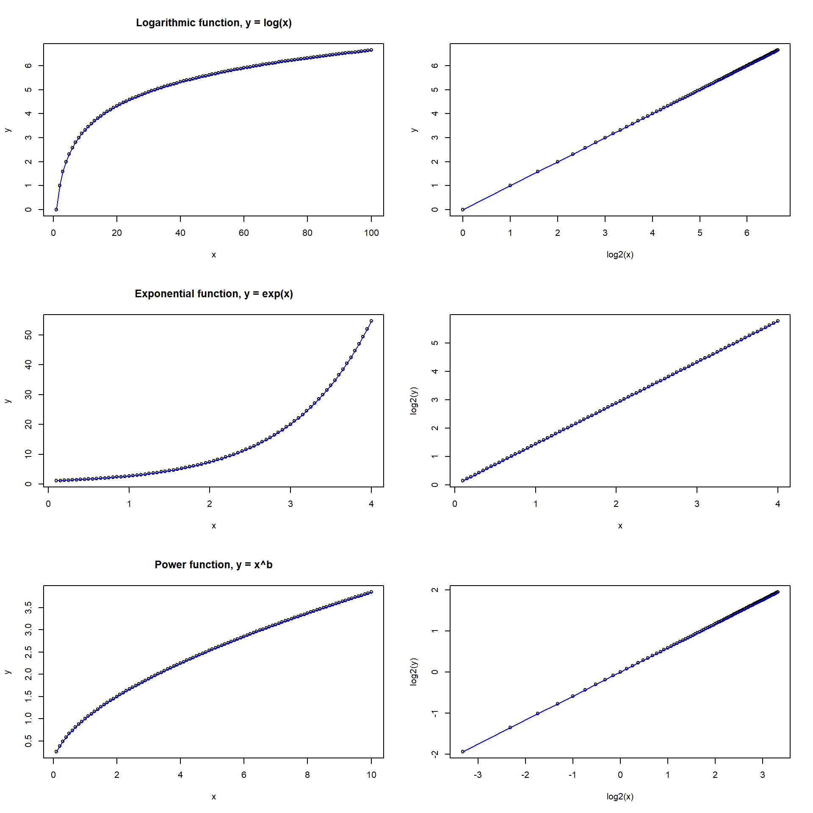
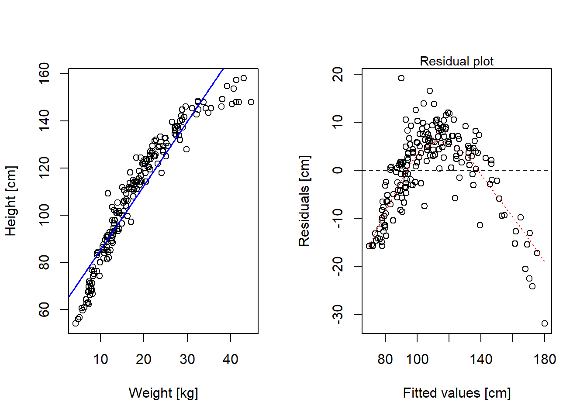
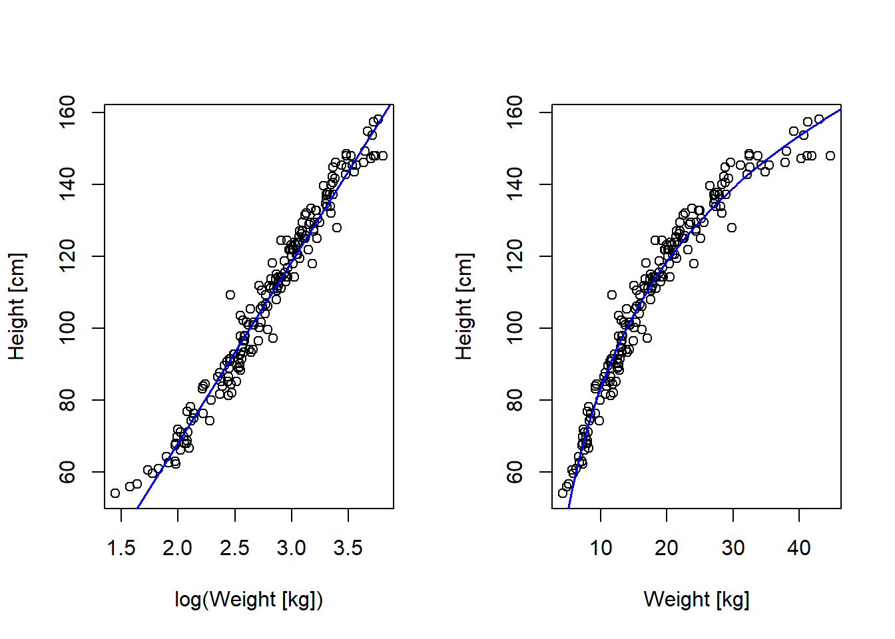
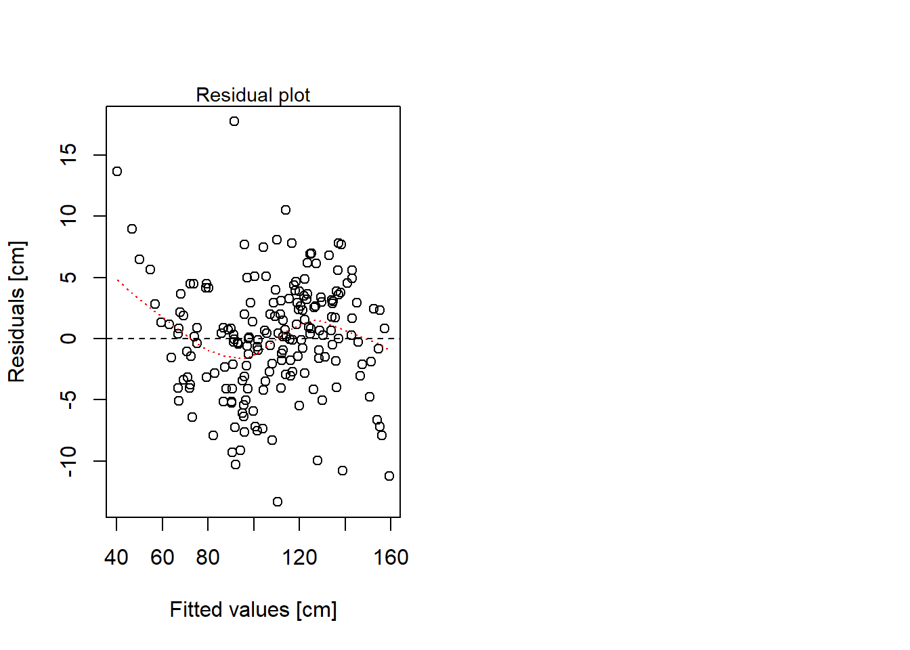
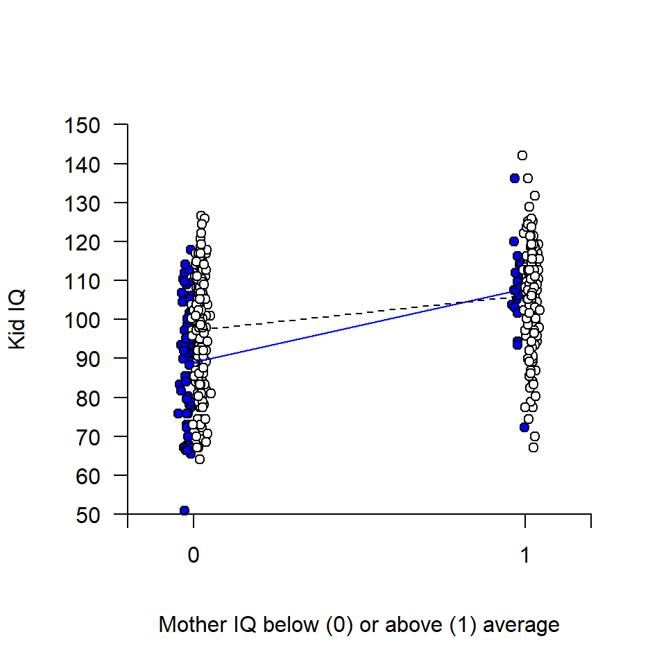
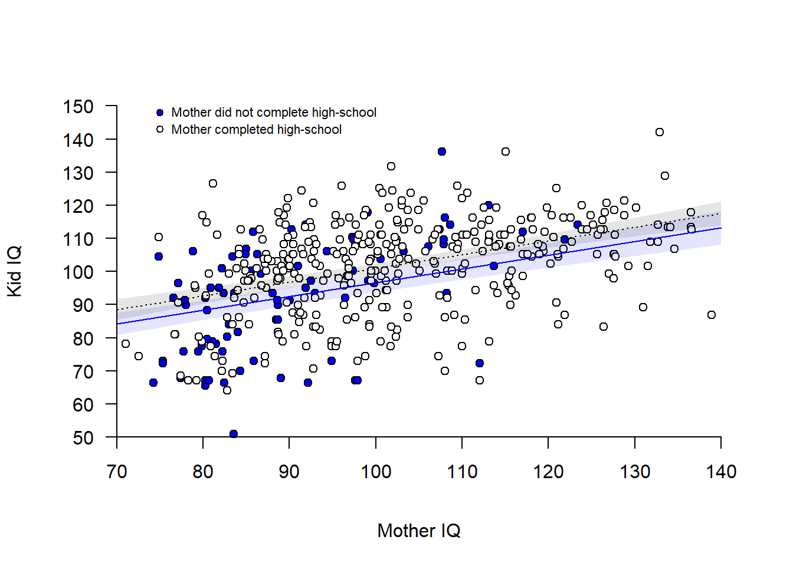
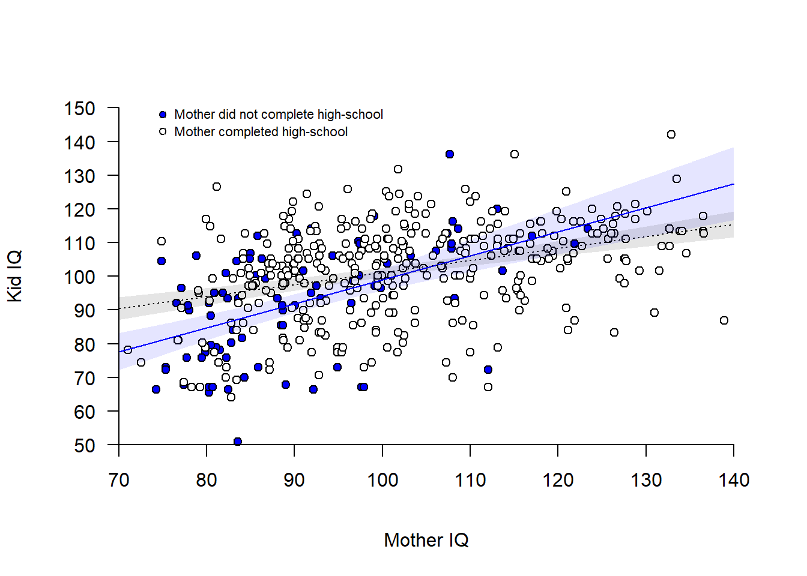
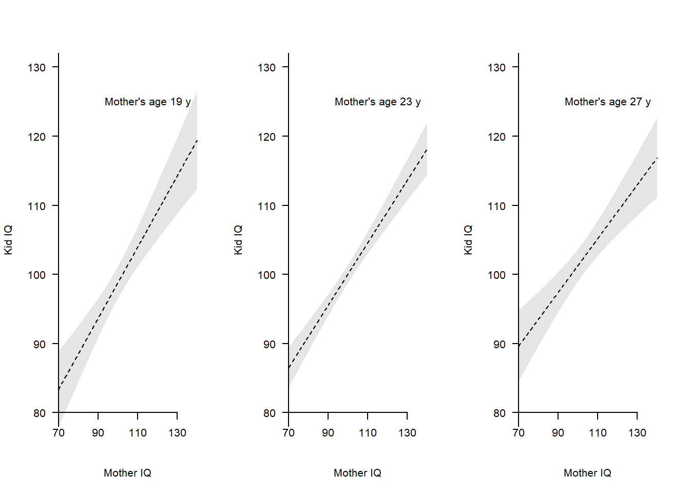
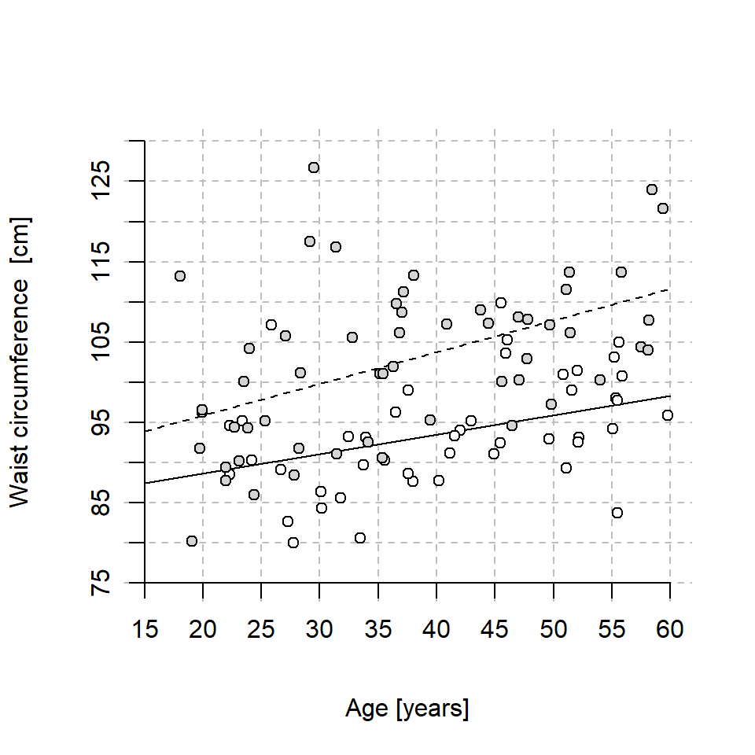

Code
library(rethinking) # Load rethinking library to get data(Howell1)
library(rstanarm) library(rethinking) # Load rethinking library to get data(Howell1)
library(rstanarm) Readings:
Gelman et al. (2021), Chapter 10 (p. 134-) and 12 (p. 186-) illustrate interaction analysis using the kid_iq data. Chapter 16 (p. 301-) discusses sample size requirements (“power”) for interaction analysis.
Non-linear transformations of predictor or outcome variables, e.g.,
par(mfrow = c(3, 2))
# From logarithmic to linear
x <- 1:100
y <- log2(x)
plot(x, y, cex = 0.8, main = "Logarithmic function, y = log(x)")
lines(x, y, col = 'blue')
plot(log2(x), y, cex = 0.8)
lines(log2(x), y, col = 'blue')
# From exponential to linear
x <- seq(0.1, 4, by = 0.05)
y <- exp(x)
plot(x, y, cex = 0.8, main = "Exponential function, y = exp(x)")
lines(x, y, col = 'blue')
plot(x, log2(y), cex = 0.8)
lines(x, log2(y), col = 'blue')
# Or:
# plot(exp(x), y, cex = 0.8)
#lines(exp(x), y, col = 'blue')
# From power-law to linear
x <- seq(0.1, 10, by = 0.1)
y <- 1*x^(log2(1.5)) # Doubling of x increases y with 1.5
plot(x, y, cex = 0.8, main = "Power function, y = x^b")
lines(x, y, col = 'blue')
plot(log2(x), log2(y), cex = 0.8)
lines(log2(x), log2(y), col = 'blue')
Here an example of a non-linear relationship that looks linear after log-transform. Anthropological data from the rethinking-package on height as a function of weight among children from a tribe in East Africa.
data(Howell1) # From rethinking package
d <- Howell1
rm(Howell1)
# Only include children: < 18 years old
d2 <- d[d$age < 18, ]
summary(d2) height weight age male
Min. : 53.98 Min. : 4.252 Min. : 0.000 Min. :0.0000
1st Qu.: 89.13 1st Qu.:11.708 1st Qu.: 3.000 1st Qu.:0.0000
Median :111.12 Median :16.981 Median : 7.000 Median :0.0000
Mean :108.32 Mean :18.414 Mean : 7.722 Mean :0.4792
3rd Qu.:127.72 3rd Qu.:23.417 3rd Qu.:12.000 3rd Qu.:1.0000
Max. :158.12 Max. :44.736 Max. :17.000 Max. :1.0000 Linear fit doesn’t look too god!
par(mfrow = c(1, 2))
# Plot data and model predictions
plot(d2$weight, d2$height, xlab = "Weight [kg]", ylab = "Height [cm]")
mlin <- lm(height ~ weight, data = d2)
abline(mlin, col = "blue", lwd = 1.5)
# Residual plot
plot(mlin$fitted.values, mlin$residuals,
xlab = "Fitted values [cm]", ylab = "Residuals [cm]")
abline(0, 0, col = "black", lty = 2)
lines(lowess(mlin$fitted.values, mlin$residuals), col = "red", lty = 3)
mtext(side = 3, text = "Residual plot", cex = 0.9)
summary(mlin)
Call:
lm(formula = height ~ weight, data = d2)
Residuals:
Min 1Q Median 3Q Max
-31.960 -5.083 1.640 6.048 19.142
Coefficients:
Estimate Std. Error t value Pr(>|t|)
(Intercept) 58.23060 1.40454 41.46 <2e-16 ***
weight 2.72009 0.06865 39.62 <2e-16 ***
---
Signif. codes: 0 '***' 0.001 '**' 0.01 '*' 0.05 '.' 0.1 ' ' 1
Residual standard error: 8.481 on 190 degrees of freedom
Multiple R-squared: 0.892, Adjusted R-squared: 0.8915
F-statistic: 1570 on 1 and 190 DF, p-value: < 2.2e-16Looks better (but not perfect!) with log-weight as predictor
par(mfrow = c(1, 2))
# Plot in log units
plot(log(d2$weight), d2$height, xlab = "log(Weight [kg])", ylab = "Height [cm]")
mlog <- lm(height ~ log(weight), data = d2)
abline(mlog, col = "blue", lwd = 1.5)
summary(mlog)
Call:
lm(formula = height ~ log(weight), data = d2)
Residuals:
Min 1Q Median 3Q Max
-13.3503 -3.0401 0.2292 2.9634 17.7553
Coefficients:
Estimate Std. Error t value Pr(>|t|)
(Intercept) -32.8566 1.9179 -17.13 <2e-16 ***
log(weight) 50.5309 0.6757 74.78 <2e-16 ***
---
Signif. codes: 0 '***' 0.001 '**' 0.01 '*' 0.05 '.' 0.1 ' ' 1
Residual standard error: 4.679 on 190 degrees of freedom
Multiple R-squared: 0.9671, Adjusted R-squared: 0.967
F-statistic: 5592 on 1 and 190 DF, p-value: < 2.2e-16# Plot in linear units
plot(d2$weight, d2$height, xlab = "Weight [kg]", ylab = "Height [cm]")
xline <- seq(1, 50, 0.1)
cflog <- mlog$coefficients
yline <- cflog[1] + cflog[2]*log(xline)
lines(xline, yline, col = "blue", lwd = 1.5)
# Residual plot
plot(mlog$fitted.values, mlog$residuals,
xlab = "Fitted values [cm]", ylab = "Residuals [cm]")
abline(0, 0, col = "black", lty = 2)
lines(lowess(mlog$fitted.values, mlog$residuals), col = "red", lty = 3)
mtext(side = 3, text = "Residual plot", cex = 0.9)
We will again use the data set in kidiq.txt to illustrate several points below. The data is from a survey of adult American women and their children. Gelman et al. (2021) describe the data set and use it at several places, e.g pp. 130-136, 156-158, 161, 185-187, and 197.
Code book:
Import data and transform variables:
d <- read.table("./datasets/kidiq.txt", sep = ",", header = TRUE)
# Dichotomize mothers IQ (above mean = 1, below mean = 0), to be used as
# indicator variable in regression analysis
d$mom_iq_hi <- 1 * (d$mom_iq > mean(d$mom_iq))
# Center mom_iq to be used as continuous variable in regression analysis
d$mom_iq_c <- d$mom_iq - mean(d$mom_iq)
# Center mom_age to mean age
d$mom_age_c <- d$mom_age - mean(d$mom_age)
# Factor variable of mom_work
d$mom_work_f <- factor(d$mom_work, levels = c(1, 2, 3, 4),
labels = c("1_nowork", "2_worky2y3",
"3_parttime", "4_fulltime"))
# Linear transform kid_score to iq-scale: mean = 100, sd = 15
# Can be done in one step, I prefer to do it in two steps, via z-scores
zkid <- (d$kid_score - mean(d$kid_score)) / sd(d$kid_score)
d$kid_iq <- zkid * 15 + 100
str(d)'data.frame': 434 obs. of 10 variables:
$ kid_score : int 65 98 85 83 115 98 69 106 102 95 ...
$ mom_hs : int 1 1 1 1 1 0 1 1 1 1 ...
$ mom_iq : num 121.1 89.4 115.4 99.4 92.7 ...
$ mom_work : int 4 4 4 3 4 1 4 3 1 1 ...
$ mom_age : int 27 25 27 25 27 18 20 23 24 19 ...
$ mom_iq_hi : num 1 0 1 0 0 1 1 1 0 0 ...
$ mom_iq_c : num 21.12 -10.64 15.44 -0.55 -7.25 ...
$ mom_age_c : num 4.21 2.21 4.21 2.21 4.21 ...
$ mom_work_f: Factor w/ 4 levels "1_nowork","2_worky2y3",..: 4 4 4 3 4 1 4 3 1 1 ...
$ kid_iq : num 84 108.2 98.7 97.2 120.7 ...Factorial designs include all combinations of the levels of two (or more) categorical variables. They are often used for interaction analyses.
Here illustrated with two dichotomous variables as predictors, mom_hs and mom_iq_hi, essentially a 2x2 between-participant ANOVA with kid_iq as outcome. Below sample sizes and statistics for kid_iq split by predictors:
my_stat <- function(x) {
n <- length(x)
m <- mean(x, na.rm = TRUE)
s <- sd(x, na.rm = TRUE)
se <- s/sqrt(length(x))
out <- c(n = n, m = m, sd = s, se = se)
out
}
ss <- aggregate(list(kid_iq = d$kid_iq),
list(mom_hs = d$mom_hs, mom_iqhi = d$mom_iq_hi),
my_stat)
round(ss, 1) mom_hs mom_iqhi kid_iq.n kid_iq.m kid_iq.sd kid_iq.se
1 0 0 71.0 88.7 15.3 1.8
2 1 0 168.0 97.4 13.9 1.1
3 0 1 22.0 107.6 11.8 2.5
4 1 1 173.0 106.2 12.7 1.0Fit regression model:
\(y_i = Normal(\mu_i, \sigma)\)
\(\mu_i = b_0 + b_1D_i + b_2G_i + b_3D_iG_i\),
where D is the dichotomous mom_hs variable and G is the dichotomous mom_iq_hi variable.
This linear model can be broken down in four parts, one for each of the 2x2 combinations of predictors:
mom_hs |
mom_iq_hi |
predicted mean | observed mean |
|---|---|---|---|
| 0 | 0 | \(b_0\) | 88.7 |
| 1 | 0 | \(b_0 + b_1\) | 97.4 |
| 0 | 1 | \(b_0 + b_2\) | 107.6 |
| 1 | 1 | \(b_0 + b_1 + b_2 + b_3\) | 106.2 |
Fit model
d_interact <- glm(kid_iq ~ mom_hs + mom_iq_hi + mom_hs*mom_iq_hi, data = d)
summary(d_interact)
Call:
glm(formula = kid_iq ~ mom_hs + mom_iq_hi + mom_hs * mom_iq_hi,
data = d)
Coefficients:
Estimate Std. Error t value Pr(>|t|)
(Intercept) 88.742 1.612 55.056 < 2e-16 ***
mom_hs 8.624 1.923 4.486 9.32e-06 ***
mom_iq_hi 18.856 3.314 5.690 2.36e-08 ***
mom_hs:mom_iq_hi -10.012 3.626 -2.761 0.00601 **
---
Signif. codes: 0 '***' 0.001 '**' 0.01 '*' 0.05 '.' 0.1 ' ' 1
(Dispersion parameter for gaussian family taken to be 184.4612)
Null deviance: 97425 on 433 degrees of freedom
Residual deviance: 79318 on 430 degrees of freedom
AIC: 3502
Number of Fisher Scoring iterations: 2confint(d_interact)Waiting for profiling to be done... 2.5 % 97.5 %
(Intercept) 85.583239 91.90156
mom_hs 4.856419 12.39250
mom_iq_hi 12.360588 25.35126
mom_hs:mom_iq_hi -17.118388 -2.90527Visualize model
# Empty plot
plot(d$mom_iq_hi, d$kid_iq, pch = '', xlim = c(-0.2, 1.2), ylim = c(50, 150),
axes = FALSE, xlab = "Mother IQ below (0) or above (1) average",
ylab = "Kid IQ")
# Add data points, with some jitter along x for visibility
offset <- 0.02
j0 <- rnorm(length(d$mom_iq_hi[d$mom_hs == 0]), -offset, 0.01) # x-jitter
j1 <- rnorm(length(d$mom_iq_hi[d$mom_hs == 1]), offset, 0.01) # x-jitter
points(d$mom_iq_hi[d$mom_hs == 0] + j0, d$kid_iq[d$mom_hs == 0],
pch = 21, bg = "blue")
points(d$mom_iq_hi[d$mom_hs == 1] + j1, d$kid_iq[d$mom_hs == 1],
pch = 21, bg = "white")
# Add axis
axis(1, at = c(-0.2, 0, 1, 1.2), labels = c("", "0", "1", ""), pos = 50)
axis(2, at = seq(50, 150, 10), pos = -0.2, las = 2)
# Add regression lines
cf <- d_interact$coefficients
xline <- c(0, 1)
yline0 <- c(cf[1], cf[1] + cf[3])
yline1 <- c(cf[1] + cf[2], sum(cf))
lines(xline - offset, yline0, col = "blue")
lines(xline + offset, yline1, lty = 2)
Compare with Analysis of variance (ANOVA), same analysis but less informative output. (aov() would be exactly the same as using lm() and another set of contrasts)
a1 <- aov(kid_iq ~ mom_hs + mom_iq_hi + mom_hs:mom_iq_hi, data = d)
summary(a1) Df Sum Sq Mean Sq F value Pr(>F)
mom_hs 1 5468 5468 29.645 8.74e-08 ***
mom_iq_hi 1 11232 11232 60.890 4.63e-14 ***
mom_hs:mom_iq_hi 1 1406 1406 7.624 0.00601 **
Residuals 430 79318 184
---
Signif. codes: 0 '***' 0.001 '**' 0.01 '*' 0.05 '.' 0.1 ' ' 1Coefficients and confidence intervals from ANOVA model
a1$coefficients (Intercept) mom_hs mom_iq_hi mom_hs:mom_iq_hi
88.742397 8.624461 18.855922 -10.011829 confint(a1) 2.5 % 97.5 %
(Intercept) 85.574322 91.910472
mom_hs 4.845784 12.403138
mom_iq_hi 12.342254 25.369591
mom_hs:mom_iq_hi -17.138447 -2.885211Let’s start with an additive model, using mom_hs and mom_iq as independent variables
\(y_i = Normal(\mu_i, \sigma)\)
\(\mu_i = b_0 + b_1D_i + b_2x_i\),
where D is the dichotomous mom_hs variable and x is the continuous variable mom_iq.
Fit model, using glm():
# Adjusted: + mom_iq
m1 <- glm(kid_iq ~ mom_hs + mom_iq_c, data = d)
summary(m1)
Call:
glm(formula = kid_iq ~ mom_hs + mom_iq_c, data = d)
Coefficients:
Estimate Std. Error t value Pr(>|t|)
(Intercept) 96.56423 1.42844 67.601 < 2e-16 ***
mom_hs 4.37279 1.62548 2.690 0.00742 **
mom_iq_c 0.41442 0.04452 9.309 < 2e-16 ***
---
Signif. codes: 0 '***' 0.001 '**' 0.01 '*' 0.05 '.' 0.1 ' ' 1
(Dispersion parameter for gaussian family taken to be 177.6375)
Null deviance: 97425 on 433 degrees of freedom
Residual deviance: 76562 on 431 degrees of freedom
AIC: 3484.6
Number of Fisher Scoring iterations: 2Visualize additive model:
## Draw figure of additive model
# Empty plot
plot(d$mom_iq_c, d$kid_iq, axes = FALSE, pch = "",
xlim = c(-30, 40), ylim = c(50, 150), xlab = "Mother IQ", ylab = "Kid IQ")
# Add points for mom_hs = 0 (blue) and mom_hs = 1 )(white)
points(d$mom_iq_c[d$mom_hs == 0], d$kid_iq[d$mom_hs == 0],
pch = 21, bg = "blue")
points(d$mom_iq_c[d$mom_hs == 1], d$kid_iq[d$mom_hs == 1],
pch = 21, bg = "white")
# Add regression lines
cf <- m1$coefficients # Coefficients of model
xline <- c(-30, 40) # Two points along the x-axis
yline0 <- cf[1] + cf[3]*xline # Predictions for mom_hs = 0
yline1 <- cf[1] + cf[2] + cf[3]*xline # Predictions for mom_hs = 1
lines(xline, yline0 , col = "blue")
lines(xline, yline1 , col = "black", lty = 3)
# Confidence bands around regression line (+- 2SE of predicted mean) --
# Calculate CI-bands mom_hs = 0
xline <- seq(-30, 40, 0.1)
hs0 <- rep(0, length(xline))
newdata0 <- data.frame(mom_iq_c = xline, mom_hs = hs0)
predict0 <- predict(m1, newdata=newdata0, se.fit = TRUE)
ci0lo <- predict0$fit - 2*predict0$se.fit
ci0hi <- predict0$fit + 2*predict0$se.fit
# Shade area mom_hs = 0
polygon(x = c(xline, rev(xline)), y = c(ci0lo, rev(ci0hi)),
col = rgb(0, 0, 1, 0.1), border = FALSE)
# Calculate CI-bands mom_hs = 1
hs1 <- rep(1, length(xline))
newdata1 <- data.frame(mom_iq_c = xline, mom_hs = hs1)
predict1 <- predict(m1, newdata=newdata1, se.fit = TRUE)
ci1lo <- predict1$fit - 1.96*predict1$se.fit
ci1hi <- predict1$fit + 1.96*predict1$se.fit
# Shade area mom_hs = 1
polygon(x = c(xline, rev(xline)), y = c(ci1lo, rev(ci1hi)),
col = rgb(0, 0, 0, 0.1), border = FALSE) # shaded area
# ---
# Add axis (transforming back mom_iq to mean = 100)
axis(1, at = seq(-30, 40, 10),
labels = seq(-30, 40, 10) + mean(d$mom_iq), # Transforming back to mom_iq
pos = 50)
axis(2, at = seq(50, 150, 10), las = 2, pos = -30)
# Add legend
points(-25, 148, pch = 21, bg = "blue", cex = 0.8)
points(-25, 143, pch = 21, bg = "white", cex = 0.8)
text(x = -25, y = 148, labels = "Mother did not complete high-school",
pos = 4, cex = 0.7)
text(x = -25, y = 143, labels = "Mother completed high-school",
pos = 4, cex = 0.7)
The model implies parallel lines, but the data seem to suggest that a steeper slope should be considered for mom_hs = 0 (blue points) compared to for mom_hs = 1 (white points). Different slope is the same as an interaction, so let’s add an interaction term:
\(y_i = Normal(\mu_i, \sigma)\)
\(\mu_i = b_0 + b_1D_i + b_2x_i + b_3D_ix_i\).
Fit model with interaction:
m1_interact <- glm(kid_iq ~ mom_hs + mom_iq_c + mom_hs:mom_iq_c, data = d)
summary(m1_interact)
Call:
glm(formula = kid_iq ~ mom_hs + mom_iq_c + mom_hs:mom_iq_c, data = d)
Coefficients:
Estimate Std. Error t value Pr(>|t|)
(Intercept) 98.9782 1.6302 60.716 < 2e-16 ***
mom_hs 2.0877 1.7834 1.171 0.24239
mom_iq_c 0.7120 0.1090 6.531 1.84e-10 ***
mom_hs:mom_iq_c -0.3559 0.1192 -2.985 0.00299 **
---
Signif. codes: 0 '***' 0.001 '**' 0.01 '*' 0.05 '.' 0.1 ' ' 1
(Dispersion parameter for gaussian family taken to be 174.4352)
Null deviance: 97425 on 433 degrees of freedom
Residual deviance: 75007 on 430 degrees of freedom
AIC: 3477.7
Number of Fisher Scoring iterations: 2confint(m1_interact)Waiting for profiling to be done... 2.5 % 97.5 %
(Intercept) 95.7831137 102.1733465
mom_hs -1.4076660 5.5830621
mom_iq_c 0.4983719 0.9257190
mom_hs:mom_iq_c -0.5895545 -0.1222411Visualize interaction model:
m1_interact <- glm(kid_iq ~ mom_hs + mom_iq_c + mom_hs:mom_iq_c, data = d)
summary(m1_interact)
Call:
glm(formula = kid_iq ~ mom_hs + mom_iq_c + mom_hs:mom_iq_c, data = d)
Coefficients:
Estimate Std. Error t value Pr(>|t|)
(Intercept) 98.9782 1.6302 60.716 < 2e-16 ***
mom_hs 2.0877 1.7834 1.171 0.24239
mom_iq_c 0.7120 0.1090 6.531 1.84e-10 ***
mom_hs:mom_iq_c -0.3559 0.1192 -2.985 0.00299 **
---
Signif. codes: 0 '***' 0.001 '**' 0.01 '*' 0.05 '.' 0.1 ' ' 1
(Dispersion parameter for gaussian family taken to be 174.4352)
Null deviance: 97425 on 433 degrees of freedom
Residual deviance: 75007 on 430 degrees of freedom
AIC: 3477.7
Number of Fisher Scoring iterations: 2confint(m1_interact)Waiting for profiling to be done... 2.5 % 97.5 %
(Intercept) 95.7831137 102.1733465
mom_hs -1.4076660 5.5830621
mom_iq_c 0.4983719 0.9257190
mom_hs:mom_iq_c -0.5895545 -0.1222411# Empty plot
plot(d$mom_iq_c, d$kid_iq, axes = FALSE, pch = "",
xlim = c(-30, 40), ylim = c(50, 150), xlab = "Mother IQ", ylab = "Kid IQ")
# Add points for mom_hs = 0 (blue) and mom_hs = 1 )(white)
points(d$mom_iq_c[d$mom_hs == 0], d$kid_iq[d$mom_hs == 0],
pch = 21, bg = "blue")
points(d$mom_iq_c[d$mom_hs == 1], d$kid_iq[d$mom_hs == 1],
pch = 21, bg = "white")
# Add regression lines
cf <- m1_interact$coefficients # Coefficients of model
xline <- c(-30, 40) # Two points along the x-axis
yline0 <- cf[1] + cf[3]*xline # Predictions for mom_hs = 0
yline1 <- cf[1] + cf[2] + (cf[3]+cf[4])*xline # Predictions for mom_hs = 1
lines(xline, yline0 , col = "blue")
lines(xline, yline1 , col = "black", lty = 3)
# Add axis (transforming back mom_iq to mean = 100)
axis(1, at = seq(-30, 40, 10),
labels = seq(-30, 40, 10) + mean(d$mom_iq), # Transforming back to mom_iq
pos = 50)
axis(2, at = seq(50, 150, 10), las = 2, pos = -30)
# Add legend
points(-25, 148, pch = 21, bg = "blue", cex = 0.8)
points(-25, 143, pch = 21, bg = "white", cex = 0.8)
text(x = -25, y = 148, labels = "Mother did not complete high-school",
pos = 4, cex = 0.7)
text(x = -25, y = 143, labels = "Mother completed high-school",
pos = 4, cex = 0.7)
# Confidence bands around regression line (+/- 2SE of predicted mean)
# Calculate CI-bands mom_hs = 0
xline <- seq(-30, 40, 0.1)
hs0 <- rep(0, length(xline))
newdata0 <- data.frame(mom_iq_c = xline, mom_hs = hs0)
predict0 <- predict(m1_interact, newdata=newdata0, se.fit = TRUE)
ci0lo <- predict0$fit - 2*predict0$se.fit
ci0hi <- predict0$fit + 2*predict0$se.fit
# Shade area mom_hs = 0
polygon(x = c(xline, rev(xline)), y = c(ci0lo, rev(ci0hi)),
col = rgb(0, 0, 1, 0.1), border = FALSE)
# Calculate CI-bands mom_hs = 1
hs1 <- rep(1, length(xline))
newdata1 <- data.frame(mom_iq_c = xline, mom_hs = hs1)
predict1 <- predict(m1_interact, newdata=newdata1, se.fit = TRUE)
ci1lo <- predict1$fit - 1.96*predict1$se.fit
ci1hi <- predict1$fit + 1.96*predict1$se.fit
# Shade area mom_hs = 1
polygon(x = c(xline, rev(xline)), y = c(ci1lo, rev(ci1hi)),
col = rgb(0, 0, 0, 0.1), border = FALSE) # shaded area
Please compare the interaction model to doing two separate regression analysis, one for each of the two groups defined by mom_hs. Note that this allows different \(\sigma\) for the two groups, otherwise coefficients should be very similar.
Bivariate model for kids to mothers who did not complete high-school:
\(y_i = Normal(\mu_i, \sigma)\)
\(\mu_i = a_0 + a_1x_i, \ \ \ \ D_i = 0\),
# Data frame with only mom_hs == 0
hs0 <- d[d$mom_hs == 0, ]
m_hs0 <- glm(kid_iq ~ mom_iq_c, data = hs0)
m_hs0
Call: glm(formula = kid_iq ~ mom_iq_c, data = hs0)
Coefficients:
(Intercept) mom_iq_c
98.978 0.712
Degrees of Freedom: 92 Total (i.e. Null); 91 Residual
Null Deviance: 25320
Residual Deviance: 17880 AIC: 759confint(m_hs0)Waiting for profiling to be done... 2.5 % 97.5 %
(Intercept) 95.5873044 102.3691558
mom_iq_c 0.4852771 0.9388138… and bivariate model for kids to mothers who did complete high-school
\(y_i = Normal(\mu_i, \sigma)\)
\(\mu_i = g_0 + g_1x_i, \ \ \ \ D_i = 1\).
# Data frame with only mom_hs == 1
hs1 <- d[d$mom_hs == 1, ]
m_hs1 <- glm(kid_iq ~ mom_iq_c, data = hs1)
m_hs1
Call: glm(formula = kid_iq ~ mom_iq_c, data = hs1)
Coefficients:
(Intercept) mom_iq_c
101.0659 0.3561
Degrees of Freedom: 340 Total (i.e. Null); 339 Residual
Null Deviance: 66640
Residual Deviance: 57130 AIC: 2720confint(m_hs1)Waiting for profiling to be done... 2.5 % 97.5 %
(Intercept) 99.6728441 102.4590121
mom_iq_c 0.2632179 0.4490773Linear interaction: Slope of one variable linearly related to another variable:
\(Y = a_0 + a_1X_1 + a_2X_2\), and
\(a_1 = b_0 + b_1X_2\)
Combining these two gives:
\(Y = a_0 + (b_0 + b_1X_2)X_1 + a_2X_2\)
\(Y = a_0 + (b_0X_1 + b_1X_2X_1) + a_2X_2\)
\(Y = a_0 + b_0X_1 + a_2X_2 + b_1X_1X_2\)
The same would have been obtained had slope of \(X_2\) been linearly related to slope of \(X_1\).
Here an example with mom_iq and mom_age as continuous variables in an interaction analysis. It is generally a good idea to use centered predictors.
m2 <- glm(kid_iq ~ mom_iq_c + mom_age_c + mom_iq_c:mom_age_c, data = d)
summary(m2)
Call:
glm(formula = kid_iq ~ mom_iq_c + mom_age_c + mom_iq_c:mom_age_c,
data = d)
Coefficients:
Estimate Std. Error t value Pr(>|t|)
(Intercept) 100.05798 0.64674 154.711 <2e-16 ***
mom_iq_c 0.45122 0.04386 10.288 <2e-16 ***
mom_age_c 0.31029 0.24107 1.287 0.199
mom_iq_c:mom_age_c -0.01566 0.01584 -0.989 0.323
---
Signif. codes: 0 '***' 0.001 '**' 0.01 '*' 0.05 '.' 0.1 ' ' 1
(Dispersion parameter for gaussian family taken to be 180.0384)
Null deviance: 97425 on 433 degrees of freedom
Residual deviance: 77417 on 430 degrees of freedom
AIC: 3491.5
Number of Fisher Scoring iterations: 2confint(m2)Waiting for profiling to be done... 2.5 % 97.5 %
(Intercept) 98.79039224 101.32557605
mom_iq_c 0.36526144 0.53718097
mom_age_c -0.16220394 0.78277753
mom_iq_c:mom_age_c -0.04670478 0.01538788Visualize model, always needed to understand the meaning of linear interactions. Here illustrated in separate plots for low, medium and high levels of age.
# User-made plot functions
empty_plot <- function() {
# Empty plot
plot(d$mom_iq_c, d$kid_iq, axes = FALSE, pch = "",
xlim = c(-30, 40), ylim = c(80, 130), xlab = "Mother IQ", ylab = "Kid IQ")
}
add_data <- function(a) {
# points(d$mom_iq_c, d$kid_iq, pch = 21, bg = "grey")
# Add confidence band : +/- 2SE
cf <- m2$coefficientscf
xline <- seq(-30, 40, 0.1)
age <- rep(a, length(xline)) # age_c = a
newdata <- data.frame(mom_iq_c = xline, mom_age_c = age)
mm <- predict(m2, newdata = newdata)
pred <- predict(m2, newdata = newdata, se.fit = TRUE)
cilo <- pred$fit - 2*pred$se.fit
cihi <- pred$fit + 2*pred$se.fit
polygon(x = c(xline, rev(xline)), y = c(cilo, rev(cihi)),
col = rgb(0, 0, 0, 0.1), border = FALSE) # shaded area
# Add regression line
lines(xline, mm, lty = 2)
# Add axis (transforming back mom_iq to mean = 100)
axis(1, at = seq(-30, 40, 20),
labels = seq(-30, 40, 20) + mean(d$mom_iq), # Transforming back to mom_iq
pos = 80)
axis(2, at = seq(50, 150, 10), las = 2, pos = -30)
}
# Draw three plots
par(mfrow = c(1, 3))
# age_c = -2, approx 21 y
empty_plot()
add_data(a = -4)
text(-10, 125, "Mother's age 19 y", cex = 1, pos = 4)
# age_c = 0, approx 23 y
empty_plot()
add_data(a = 0)
text(-10, 125, "Mother's age 23 y", cex = 1, pos = 4)
# age_c = 2, approx 25 y
empty_plot()
add_data(a = 4)
text(-10, 125, "Mother's age 27 y", cex = 1, pos = 4)
Figure clearly shows similar slopes for the three age groups, in line with the regression output suggesting no strong linear interaction.
The practice problems are labeled Easy (E), Medium (M), and Hard (H), (as in McElreath (2020)).
14E1. Give examples of when you would consider to log-transform …
14E2.
Below is a plot of age and waist circumference in a sample of Swedish women (open circles) and men (filled circles). The lines show the fit of the linear model
\(Waist = b_0 + b_1(Age-20) + b_2Male + b_3((Age-20)*Male)\),
where \(Waist\) is waist circumference in centimeters, \(Age\) is in years and \(Male\) is an indicator variable coded 0 for women and 1 for men. The solid line is for women (\(Male = 0\)) and the dashed line for men (\(Male = 1\))
Estimate by eye the four coefficients \(b_0, ..., b_3\)

14E3.
The figure in 14E2 has two lines.
\(y = a_0 + a_1Age\) for females (solid line), and
\(y = d_0 + d_1Age\) for males (dotted line).
Relate each of these coefficients (\(a_0, a_1, d_0, d_1\)) to the coefficients of the fitted model \(b_0, b_1, b_2, b_3\) displayed in 14E2.
Here is the model fit from 14E2!
round(cf, 1)(Intercept) age20 male age20:male
88.7 0.2 7.2 0.2 14M1. Interactions should always be understood in relation to the statistical model. An interaction with the outcome in linear units may not be present if the outcome is modeled in log-units. Explain and visualize.
14H1. Use stan_glm() to fit the interaction model above: kid_iq ~ mom_hs + mom_iq_c + mom_hs:mom_iq_c and draw the figure with CI-bands around model predictions (x-axis: mom_iq (non-centered!), separate lines for mom_hs)
sessionInfo()R version 4.4.2 (2024-10-31 ucrt)
Platform: x86_64-w64-mingw32/x64
Running under: Windows 11 x64 (build 26100)
Matrix products: default
locale:
[1] LC_COLLATE=Swedish_Sweden.utf8 LC_CTYPE=Swedish_Sweden.utf8
[3] LC_MONETARY=Swedish_Sweden.utf8 LC_NUMERIC=C
[5] LC_TIME=Swedish_Sweden.utf8
time zone: Europe/Stockholm
tzcode source: internal
attached base packages:
[1] parallel stats graphics grDevices utils datasets methods
[8] base
other attached packages:
[1] rstanarm_2.32.1 Rcpp_1.0.14 rethinking_2.42
[4] posterior_1.6.1 cmdstanr_0.9.0.9000
loaded via a namespace (and not attached):
[1] tidyselect_1.2.1 dplyr_1.1.4 farver_2.1.2
[4] loo_2.8.0 fastmap_1.2.0 tensorA_0.36.2.1
[7] shinystan_2.6.0 promises_1.3.3 shinyjs_2.1.0
[10] digest_0.6.37 mime_0.13 lifecycle_1.0.4
[13] StanHeaders_2.32.10 survival_3.7-0 processx_3.8.6
[16] magrittr_2.0.3 compiler_4.4.2 rlang_1.1.6
[19] tools_4.4.2 igraph_2.1.4 yaml_2.3.10
[22] knitr_1.50 htmlwidgets_1.6.4 pkgbuild_1.4.8
[25] curl_6.4.0 plyr_1.8.9 RColorBrewer_1.1-3
[28] dygraphs_1.1.1.6 abind_1.4-8 miniUI_0.1.2
[31] grid_4.4.2 stats4_4.4.2 xts_0.14.1
[34] xtable_1.8-4 inline_0.3.21 ggplot2_3.5.2
[37] scales_1.4.0 gtools_3.9.5 MASS_7.3-61
[40] cli_3.6.5 mvtnorm_1.3-3 rmarkdown_2.29
[43] reformulas_0.4.1 generics_0.1.4 RcppParallel_5.1.10
[46] rstudioapi_0.17.1 reshape2_1.4.4 minqa_1.2.8
[49] rstan_2.32.7 stringr_1.5.1 splines_4.4.2
[52] shinythemes_1.2.0 bayesplot_1.13.0 matrixStats_1.5.0
[55] base64enc_0.1-3 vctrs_0.6.5 boot_1.3-31
[58] Matrix_1.7-1 V8_6.0.4 jsonlite_2.0.0
[61] crosstalk_1.2.1 glue_1.8.0 nloptr_2.2.1
[64] codetools_0.2-20 ps_1.9.1 DT_0.33
[67] distributional_0.5.0 stringi_1.8.7 shape_1.4.6.1
[70] gtable_0.3.6 later_1.4.2 QuickJSR_1.8.0
[73] lme4_1.1-37 tibble_3.3.0 colourpicker_1.3.0
[76] pillar_1.10.2 htmltools_0.5.8.1 R6_2.6.1
[79] Rdpack_2.6.4 evaluate_1.0.3 shiny_1.11.1
[82] lattice_0.22-6 markdown_2.0 rbibutils_2.3
[85] backports_1.5.0 threejs_0.3.4 httpuv_1.6.16
[88] rstantools_2.4.0 nlme_3.1-166 coda_0.19-4.1
[91] gridExtra_2.3 checkmate_2.3.2 xfun_0.52
[94] zoo_1.8-14 pkgconfig_2.0.3